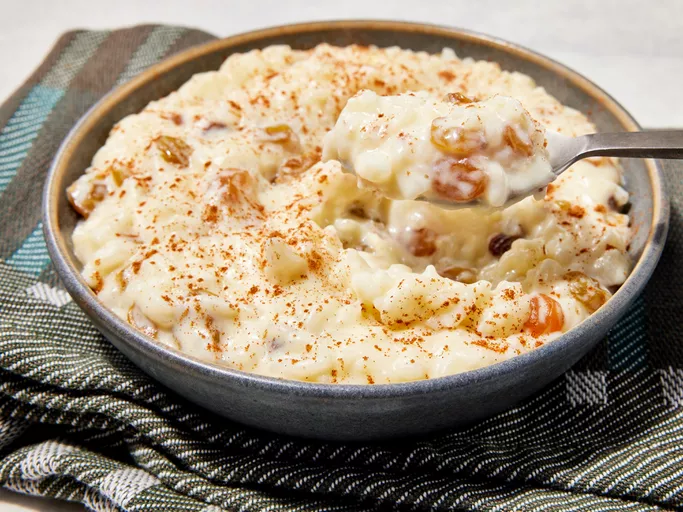

Home
Creamy Rice Pudding

Description
This rice pudding is the best I've ever tasted, and it gets rave reviews from everyone who tastes it!
Sprinkle with nutmeg or cinnamon, if desired. For creamier pudding, use short or medium-grain rice.
Ingredients
- 1 ½ cups cold water
- ¾ cup uncooked white rice
- 2 cups milk, divided
- ⅓ cup white sugar
- ¼ teaspoon salt
- 1 large egg, beaten
- ⅔ cup golden raisins
- 1 tablespoon butter
- ½ teaspoon vanilla extract
Steps
-
Gather all ingredients.
-
Pour water into a saucepan and bring to a boil over medium heat; stir in rice.
Reduce heat to low, cover, and simmer until rice is
tender and liquid has been absorbed, about 20 minutes.
-
Combine cooked rice, 1 ½ cups milk, sugar, and salt in a clean saucepan.
Cook over medium heat, stirring often, until thick and creamy, about 15 minutes.
-
Stir in remaining 1/2 cup milk, beaten egg, and raisins;
cook 2 minutes more, stirring constantly.
Remove from heat and stir in butter and vanilla until combined..
-
Serve warm.